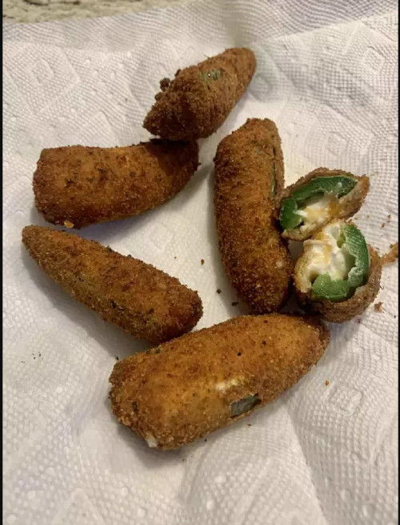

Jalapeno Poppers

Description
Jalapeno poppers are a favorite of many people when they need a quick snack or as an appetizer to a party. Crispy and crunchy on the outside, but cheesy and spicy on the inside; truly they bring joy to any occasion. While they're often cheap enough to buy in bulk, with some elbow grease you can make them at home for a fraction of the price! Just remember to enjoy responsibly.
If you wish to add even more flavor, consider a ranch dip or a spicy jelly topping!
Ingredients
- 12oz softened cream cheese
- 8oz shredded cheddar cheese
- 1 tablespoon bacon bits
- 12oz jalapeno peppers, seeded and halved
- 1 cup milk
- a cup all-purpose flower
- 1 cup dry bread crumps
- 2 quarts oil for frying
Steps
- Work cream cheese, cheddar cheese, and bacon buts together in a medium bowl until well combined. Spoon mixture into jalapeno halves.
- Put milk in a small bowl, flour in a second, bread crumbs ina third.
- Dip stuffed jalapenos in milk, then flour. Ensure they are well coated. Transfer to a plate and let dry for 10 minutes.
- Dip in milk once more, then roll through breadcrumbs. Let dry for 10 minutes on the same place, then repeat this step once more. Make sure they are fully coated, let dry.
- Heat oil to 365 degreees F in a medium skillet.
- Working in batches, deep fry jalapenos until golden brown, 2-3 minutes. Remove and drain on paper towels.